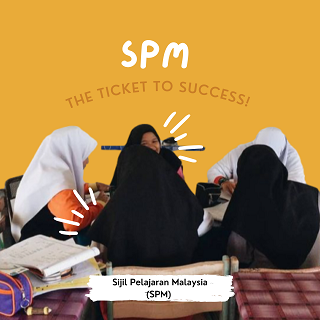
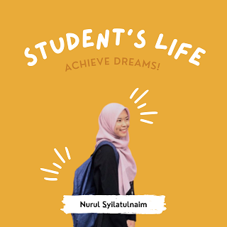
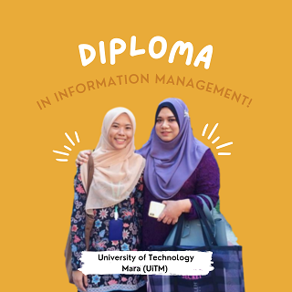
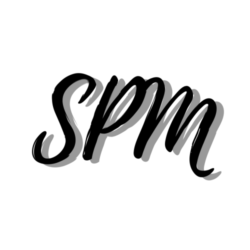
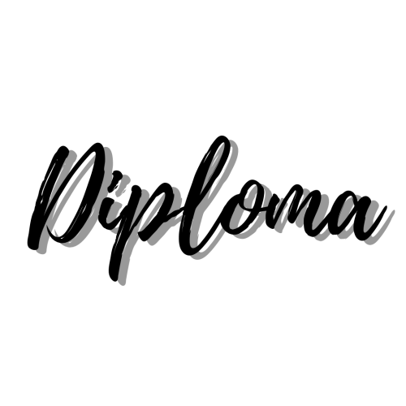

|  |  |  |
|
During the past 3 years, I was a secondary school student and I was drowned by homework, responsibilities, problems, and all kinds of other things. Now, I am in university. This reminds me of one thing, the beginning of a new challenge in my life. My life in secondary school has been filled with funny and happy moments, and many of them come from the school’s clubs. My school has many clubs such as Peers Club, Choir, English Club and MIU (Media Innovation Unit). Luckily I’m a member of the School Choir. When I was still in my primary school, I always wanted to join the school choir because it represented the school. For SPM, I got 4A 4B 1C. I am thankful even a if I only got 4A but I managed to pass and credit for all subjects. My SPM results have given a new light in my life where I got an offer to further my studies at the diploma level at a local university, University Technology Mara (UiTM) in Kedah. |
 |
|  | I continued my studies in the Diploma in Information Management at UiTM Kedah for two and a half years. Each semester, I will improve my weaknesses and grades so that the dream of being a dean can be achieved. I admit that I once failed a subject during semester 1 and I deeply regret it. Well, people say failure does not mean we lose, in fact it is a stepping stone for us to stay awake. I learned from my mistakes and continued to improve my grades from time to time until finally, in semester 4, I got a dean. I am thankful that my efforts finally paid off. |